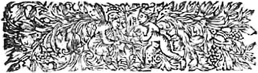
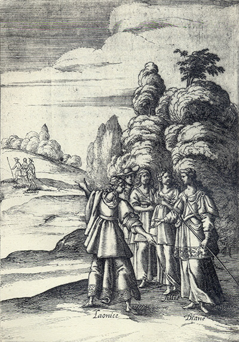
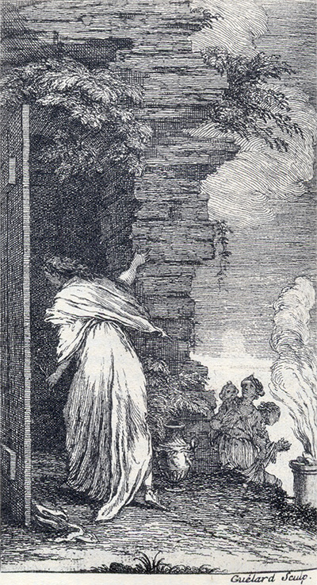

Tableaux analytiquesIndex des noms propres Tableaux des personnages Répertoire
(autres noms propres)Glossaire Dictionnaire des fréquences Notes
Topographie du sitePlan du site Index de l'apparat critique Bibliographie Liens externes Liens vers Gallica
SupportGuide de la navigation FAQ Nouveautés Remerciements Auteur du site
Effacer les témoins
(cookies)X
Accueil Préface Choix éditoriaux Les Quatrièmes parties Les
IntroductionsAstréesposthumes L'Édition de Vaganay Présentation des textes Pleins feux sur
L'Astrée
Lecture de
L'AstréeI
Éd. de référenceepartie 1621 II
epartie 1621 III
epartie 1621 IV
epartie 1624
I
Éd. préliminaireepartie 1607 II
epartie 1610 III
epartie 1619
Éd. fonctionnelleavec gravuresI
epartie II
epartie III
epartie IV
epartie
en Word
Éd. téléchargeableen Word
Chronologie historique
Résumédes intrigues
APPARAT CRITIQUEÉvolution de
Le romanL'AstréeVariantes confrontées Variantes, I
epartie Variantes, II
epartie Variantes, III
epartie Analyse des illustrations Parallèles suggérés Résumé des intrigues Chronologie historique Témoignages Du Crozet Sorel Guéret Poèmes de Lingendes
Biographie Biographes, critiques Événements Généalogie Testament Inventaire Héritages Poèmes Épîtres Lettres Remarques
Le romanciersur Malherbe
Bibliographie Liens externes Liens vers Gallica Cartothèque Galerie de portraits Film d'Eric Rohmer Partitions d'A. Naigeon Photos du Forez
Ressources

«
@
»
X

avancéeRecherche ciblée Fils d'Arianne Hyperbase (É. Brunet) Accès aux pages/folios Concordances-Vaganay
police condenséeL'AstréeRésumé du roman Chronologie historique Choix éditoriaux Présentation des textes Évolution Illustrations
 Annexe
Annexe

L'Astrée
L'Astrée fonctionnelle
L'Astrée

Livre 10

Livre 12

L'Astrée
d'Honoré d'Urfé
Troisième partie
Livre 11

Au fond, Madonthe s'éloigne avec Tersandre et Silvandre
Au premier plan, Laonice ment à Diane en présence de Phillis
Les personnages anonymes sont Astrée et Hylas (III, 11, 477 verso)
L'AstréeIII, 11. Édition Vaganay**, 1925Au fond, Madonthe s'éloigne avec Tersandre et Silvandre
Au premier plan, Laonice ment à Diane en présence de Phillis
Les personnages anonymes sont Astrée et Hylas (III, 11, 477 verso)
(Voir Illustrations)

Gravure signée Guélard
À Montverdun, Cléontine est à la porte du temple (III, 11, 457 verso)
L'AstréeIII, 11. Édition Vaganay**, 1925Gravure signée Guélard
À Montverdun, Cléontine est à la porte du temple (III, 11, 457 verso)
(Voir Illustrations)
Éd. de 1619, 439 verso.
Éd. Vaganay, III, p. 575.

VA, Nymphe, et rends tes vœux, mais retiens ce présage :
Bientôt, n'en doute point, tu sortiras d'erreur
η,
Mais garde que l'Amour se changeant en fureur
Beaucoup plus ne t'outrage.
Et toi, parfait amant,
Lorsque tu parviendras où parle un diamant
η,
Tu seras rappelé de la mort à la vie
Par celui des humains
η
À qui plus tu voudrais l'avoir déjà ravie.
Laisse donc contre lui désormais tes dédains.

Ainsi dans le giron de Psyché dormirait,
Ou dedans les vergers d'Amathonte
et d'Éryx
Le petit Cupidon, lorsqu'un long exercice,
Aux pavots
η du sommeil ses beaux yeux forcerait.
Ainsi trop curieuse elle l'admirerait,
L'Amoureuse Psyché, ce Dieu plein de délice ;
Mais quoiqu'il fût armé d'attraits et d'artifice,
Moins beau que cette belle, elle le jugerait.
Jamais, dans la beauté, tant de beauté n'eut place,
Ni les Grâces jamais n'ont fait voir tant de grâce
Qu'Amour dedans ce lit en présente à mes yeux.
Pour voir la Déité, tu mourus bien, Sémélé,
Pourquoi ne meurs-je aussi regardant cette belle,
Si sa divinité surpasse tous les Dieux ?

Ils étaient pris d'un sommeil otieux
Ces deux Soleils, et clos sous la paupière.
Mais leurs rayons avaient trop de lumière
Pour ne ravir et n'éblouir mes yeux.
Pourquoi le Ciel ne permet
η-il
encore,
Qu'ainsi que toi, de celle que j'adore
En ce sommeil je dérobe un baiser ?
J'entends, Amour, ce que tu me veux dire :
Pour être heureux, un Amant doit oser
η.
Elle l'osa, mais moi je m'en retire.

L'Arrogante qu'elle est, elle sait que je l'aime,
Que pour elle je meurs, plein d'amour et de foi,
Qu'elle ne peut vouloir plus qu'elle peut sur moi,
Et que je l'aime mieux qu'elle n'aime soi-même.
Elle reconnaît bien que mon amour extrême
Ne saurait s'augmenter tant elle est grande en soi,
Que de tous les devoirs
je méprise la loi
η,
Et que de le nier ce serait un blasphème.
Elle le voit, l'ingrate, et ne me rend, ô Dieux !
Pour tant d'affection, qu'un mépris odieux,
Comme si mon Amour sa haine faisait naître.
Oublions-la, mon cœur, et tous nos feux passés,
Quand nous n'aimerons plus, elle aimera peut-être.
Mais qui pourrait haïr ce que nul n'aime assez ?
qui, pour un moment qu'il a été entre mes bras, m'a donné tant d'Amour que je ne sais comme je puis vivre parmi tant de feux et de flammes qui me brûlent. Et lors, considérant qu'il parlait à une chose insensible, et qui jouissait d'un bonheur qui lui était inutile pour ne le savoir pas reconnaître, il ne se peut empêcher de dire tels vers :

DE cet heureux habit, je dis
η
presque jaloux :
Rien jamais de parfait ne se voit
entre nous.
Si comme vous j'avais entre mes bras ma belle,
Quel heur serait le mien !
Si vous mouriez d'Amour comme je meurs pour elle,
Quel serait votre bien !
Mais le Ciel, qui ne veut que quelque chose humaine
Soit parfaite en tout point,
Ce qui défaut en vous est en moi pour ma peine,
Et veut
η qu'ayant mon bien vous n'en joussiez point.
I.

Rompons notre prison, délivrons-nous, mon cœur,
Du lien qui nous serre,
Et pour montrer qu'amour n'est plus notre vainqueur,
Foulons-le contre terre.
II.
Foulons-le sous les pieds, et fuyons désormais
La honte du servage,
Sans que cette beauté puisse espérer jamais
De changer mon courage.
III.
Elle a vu mes deux yeux, pour pleurer mes malheurs,
Sembler à deux fontaines,
Et ma voix ne trouver passage entre mes pleurs,
Qu'à
soupirer mes peines.
IV.
Elle a vu que chacun, considérant ma foi
Et son humeur cruelle,
Blâmait également l'excès d'Amour en moi,
Et le défaut en elle.
V.
Elle a vu que l'Amour m'a réduit à tel point
Que j'avais plus d'envie
De mourir en l'aimant, qu'hélas je n'avais point
De conserver ma vie.
Elle a vu que l'Amour m'a réduit à tel point
Que j'avais plus d'envie
ηDe mourir en l'aimant, qu'hélas je n'avais point
De conserver ma vie.
VI.
Mais que n'a-t-elle
η vu, la cruelle qu'elle est,
De mon cruel martyre ?
Que n'en a-t-elle vu ? mais qu'en a-t-elle fait
Autre chose qu'en rire ?
VII.
Elle a ri sans pitié des maux que j'ai soufferts,
Et d'une humeur dépite :
- S'il s'en fâche, dit-elle, il peut rompre ses fers,
Quant
η à moi, je l'en
η quitte.
VIII.
Quelle force lui fais-je, et pourquoi sans raison
Dit-il que je l'outrage ?
Puisque quand il voudra j'ouvrirai sa prison
Qu'il sorte du servage
η.
IX.
- Oui, cruelle beauté, ces fers dont je me plains,
Et qu'à tort on méprise,
Par un puissant dépit me sont tombés des mains,
Et je suis en franchise.
X.
Je pensais en l'aimant qu'un sujet tout divin
Eût fait naître ma flamme,
Mais son cruel mépris m'a fait connaître enfin
Que j'aimais une femme.
XI.
Femme, qu'on ne saurait qu'à soi-même égaler,
N'ayant point de seconde.
Femme, que sans outrage on peut bien appeler
La plus femme du monde.
XII.
Adieu donc pour jamais - trop insensible esprit,
Ma flamme est étouffée,
Victorieux j'appends à mon juste dépit
Ton Amour pour Trophée
Femme, qu'on ne saurait qu'à soi-même égaler,
N'ayant point de seconde.
Femme, que sans outrage on peut bien appeler
La plus femme du monde.
XII.
Adieu donc pour jamais - trop insensible esprit,
Ma flamme est étouffée,
Victorieux j'appends à mon juste dépit
Ton Amour pour Trophée
η.
Fin du 11e livre.
Livre 10
Livre 12
Référence électronique :
document.write('"'+document.title.substr(0, document.title.indexOf("-")-1)+'". '+"Dernière mise à jour : "+ExtractDate(document.lastModified)+".")Deux visages de L'Astrée.
©2005-2020 E. Henein.
URL :
var today = new Date();
document.write(document.URL +
"<br>Consulté le : " + today.toLocaleDateString("fr-FR") + ".");
var _gaq = _gaq || [];
_gaq.push(['_setAccount', 'UA-19288475-1']);
_gaq.push(['_trackPageview']);
(function() {
var ga = document.createElement('script'); ga.type = 'text/javascript'; ga.async = true;
ga.src = ('https:' == document.location.protocol ? 'https://ssl' : 'http://www') + '.google-analytics.com/ga.js';
var s = document.getElementsByTagName('script')[0]; s.parentNode.insertBefore(ga, s);
})();
Deux visages de L'Astrée.
©2005-2019 Eglal Henein. Creative Commons 4 
Édition critique de la première partie de L'Astrée (1607, 1621)
mise en ligne le 9 avril 2007
Édition critique de la deuxième partie de L'Astrée (1610, 1621)
mise en ligne le 10 octobre 2010
Édition critique de la troisième partie de L'Astrée (1619, 1621)
mise en ligne le 1er novembre 2014
Édition critique de la quatrième partie de L'Astrée (1624)
mise en ligne le 15 janvier 2019
document.write("Dernière mise à jour : "+ExtractDate(document.lastModified))